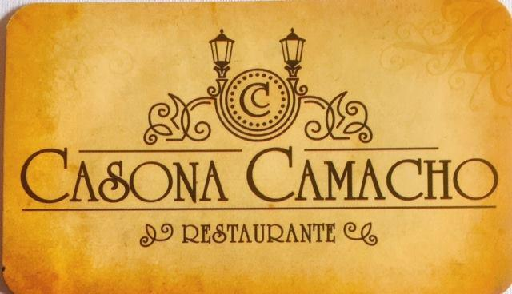

NUESTROS PLATOS
ENTRADAS

ENTRADAS FRIAS
FRUTA DE TEMPORADA
HUEVOS DE CODORNIZ
CEVICHE DE CAMARONES
ENTRADAS CALIENTES
CHAMPIÑONES AL AJILLO
CREMA DE POLLO
CREMA DE CHAMPIÑON
CREMA DE CAMARONES
CREMA DE LA CASA (robalo y camarón
PALMITOS DE MAR GRATINADOS
ANTIPASTO GRATIN